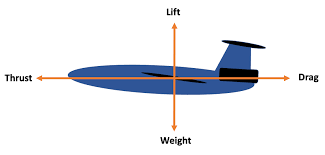
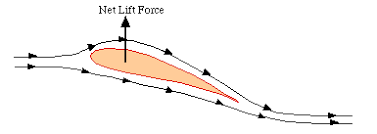
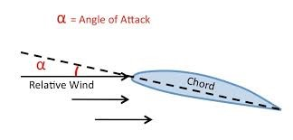
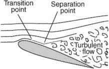

Lift is one of the fundamental forces in which enables aircraft to overcome gravity, maintaining flight. Within this article the science behind lift is explored, focusing upon the
aerodynamic principles which allow aircraft (mainly airplanes) to stay in the sky. It introduces the four fundamental forces in flight with the emphasis being on lift and its vital
role in opposing the aircrafts weight. Thereafter magnifying onto key concepts of what contributes to lift which consist of Bernoulli’s principle, airfoil design, and the angle of
attack. Also talking about the relationship between airflow, pressure differences, and the actual shape of the wing. By unravelling the science behind lift, this article aims to provide
a clear explanation of how airplanes harness aerodynamic forces to fly in the air.
Introduction
Aerodynamics is the study of how air interacts with objects, in this case particularly airplanes. It is essential in aviation being utilised for design of efficient and safe
airplanes that can travel efficiently around the world.
Lift is a core force within aerodynamics and possibly the most significant during flight. It is the force which enables planes and aircraft of the like to overcome the force
of its weight. Lift is generated primarily by the wings of an aircraft, where differences in air pressure above and below the wings create an upward force. Lift is crucial not
only for take-off but also for sustained flight. Understanding how lift works is essential for pilots, engineers, and anyone involved in aviation, as it directly influences the
design of aircraft and the efficiency of flight. (van Dam, 2002)
The Four Fundamental Forces

The four fundamental forces for airplanes to fly are thrust, drag, weight and what we will be exploring today, lift. (Puspitasari et al., 2023). Weight is the gravitational force
acting upon the objects mass and for lift to work it must have a greater output than the force of the objects or aircrafts weight. Thrust is the force produced by the engines
(these can be jets or propellers) which propels the plane forward through the air. While on the opposite side is drag which is the resistive force that opposes the planes
direction of motion. Similarly, to lift and weight, the forces of thrust and drag have a relationship in which when one is greater than the other will lead in the velocity to either
increase or decrease i.e. accelerate and/or maintain speed when thrust is greater and decelerate when drag is greater.
Bernoulli's Principle & Air Foil

How does lift occur? It is due to two things one is airfoil the other being Bernoulli’s principle. (van Dam, 2002). Bernoulli’s principle states that if a fluid is in flow (i.e. air),
an increase in velocity of the fluid leads to a decrease in pressure, and the same vice versa, assuming that the flow is steady, and the fluid is incompressible. While airfoil is the
specific shape in which the wings of a plane are designed to generate lift efficiently by utilising Bernoulli’s principle while minimizing drag. (Anwar & Hashim, 2018). Now in context of flight,
Bernoulli’s principle helps explain how lift is generated by an airplane wing as seen in the figure. Lift is caused by the difference in pressure above and below the wing. Now this is done
as the airfoil is designed so that air flows faster above the wing (with a longer path) and slower below the wing thus from Bernoulli’s principle creates low pressure region above the wing and
low-pressure region below the wing causing lift. This is the main driving force when it comes to lift as all other components are methods of optimizing the use of Bernoulli’s principle.
(Anwar & Hashim, 2018).
Angle of Attack & Flow Separation


Angle of attack is the angle between the chord line of an air foil (an imaginary line from the leading edge to the trailing edge) and the direction of air flow as seen on the figure.
It plays a crucial role in generating and controlling lift for the airplane.
If the angle of attack were to increase more airflow would be caught in the wings of the plane and thus increasing the pressure difference between above and below the wing. As a result
of the greater contrast, lift generated by the wing also increases. Now, this means that because of increasing the angle of attack it will lead to more lift being generated but there
is a limit on this as once it passes a threshold which if the angle of attack were to exceed would lead to loss of lift due to flow separation. (Puspitasari et al., 2023).
Flow separation occurs when the smooth air flow over the upper part of the wing breaks and/or derails from the layer and thus creating turbulent air flow as depicted within the figure.
Flow separation occurs on two conditions a too great angle of attack or if air speed is not great enough to where airflow can stay attached to the surface thus separating, the point of
where the flow detaches being the separation point.
Flow separation causes the lift to decrease and for drag to increase both diminishing the efficiency of the plane and in the most extreme cases if severe enough can lead for the wings
to stall leading to a complete loss of lift and control. (Kleine et al., 2023).
Conclusion
Within this article the basic concepts of aerodynamics were examined with great focus upon the theory behind lift and all such factors and principles which contribute towards it. Shown by Bernoulli’s
principle how lift is generated by variation in air pressure and how by airfoil effecting the speed of airflow above and below the wing planes can efficiently utilise this principle.
Understanding these aerodynamic principles is essential for both aircraft design and flight performance / safety. Lift is a force that pilots and engineers rely on to ensure safe and efficient
flight. As we continue to innovate in aviation, refining our understanding of how air interacts with wings will remain at the core of developing more efficient and capable aircraft.
References
van Dam, C. P. (2002) ‘The aerodynamic design of multi-element high-lift systems for transport airplanes’, Progress in Aerospace Sciences, 38(2), pp. 101–144. https://doi.org/10.1016/S0376-0421(02)00002-7
Puspitasari, D., Napitupulu, W. P. A., Gunawan, A. D., Oemar, B., Zulkarnain, A., Arifin, A., & Saputra, M. A. A. (2023) ‘Investigation of angle of attack on lift and drag airfoil NACA 0012 at Mach 0.70 by CFD method’
, AIP Conference Proceedings, 2689(1), pp. 1-6. https://doi.org/10.1063/5.0115047
Kleine, V. G., Hanifi, A. and Henningson, D. S. (2023) ‘Simulating airplane aerodynamics with body forces: Actuator line method for nonplanar wings’, AIAA Journal, 61(5), pp. 2048–2059. https://doi.org/10.2514/1.J062398
Anwar, A., & Hashim, M. (2018) ‘Aerodynamic performance of airfoils for aircraft applications: A comparative study’, Aerospace Science and Technology, 75, pp. 480-489. https://doi.org/10.1016/j.ast.2018.02.010